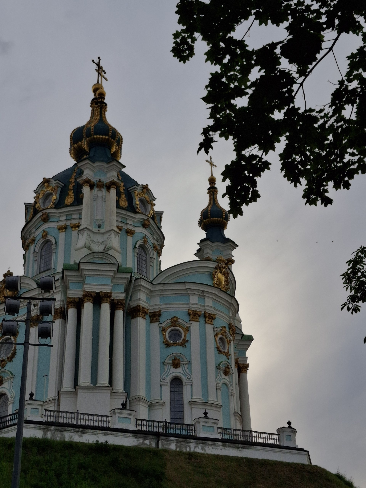

Дата народження: 20.11.2006. Місце народження: Сумська область, м. Кролевець.
Освіта: навчалася у кролевецькій спеціалізованій школі №1. Зараз навчаюся в Національному технічному університеті України «Київський політехнічний інститут імені Ігоря Сікорського», 3 курс, група ІС-43.
Київ — столиця України та одне з найкрасивіших міст країни. Місто відоме своєю багатою історією, архітектурою та мальовничими краєвидами. Особливо мені подобаються зелені парки, затишні вулиці та краєвиди на річку Дніпро. Серед найвідоміших пам'яток Києва — Софійський собор, Києво-Печерська лавра та Андріївський узвіз. Київ поєднує історичну спадщину із сучасним життям, тому є моїм улюбленим містом.
